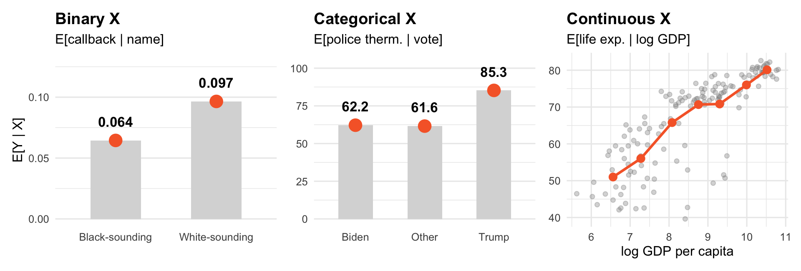
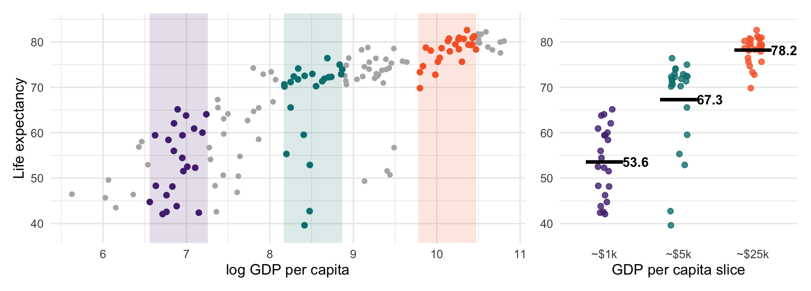
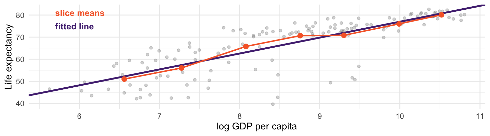
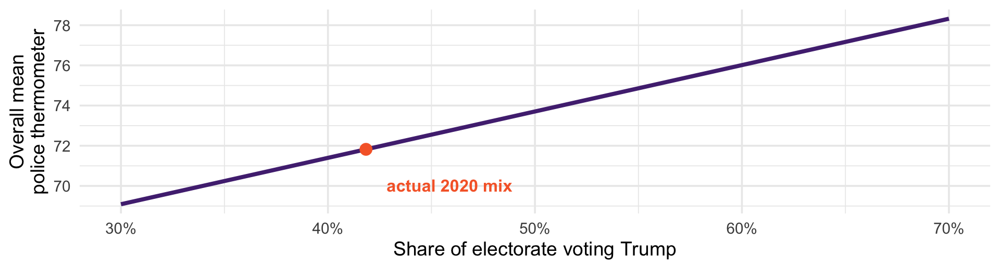
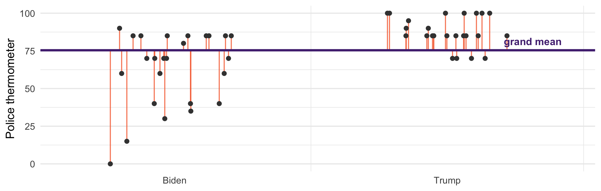
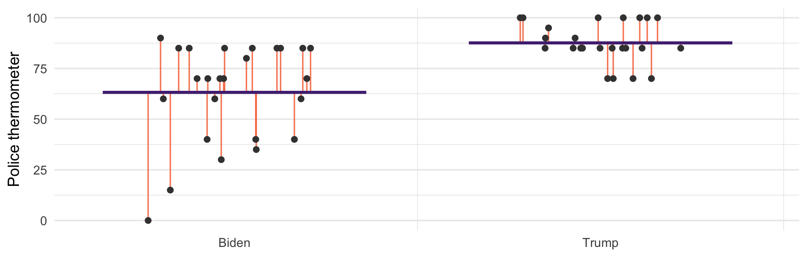

resumes <- resumes |> mutate(callback = call == "yes") # TRUE/FALSE, as before
resumes |> group_by(ethnicity) |> summarise(EY = round(mean(callback), 4))# A tibble: 2 × 2
ethnicity EY
<chr> <dbl>
1 afam 0.0645
2 cauc 0.0965This is the last probability session before we turn to inference
Everything we have covered so far - conditioning, expectation, joint distributions - comes together today
If you understand the conditional expectation function, regression will make sense.
The conditional expectation of \(Y\) given \(X = x\):
\[E[Y \mid X = x] = \begin{cases} \sum_y y \cdot p_{Y \mid X}(y \mid x) & \text{discrete } Y \\[4pt] \int y \cdot f_{Y \mid X}(y \mid x)\, dy & \text{continuous } Y \end{cases}\]
It is an ordinary expectation, computed inside the world where \(X = x\)
\(p_{Y \mid X}(y \mid x)\) is just \(P(Y = y \mid X = x)\), the conditional PMF from earlier. \(f_{Y \mid X}\) is its continuous counterpart; today we stick to the discrete case.
Fred is a 30-year-old man. Average life expectancy in his country is 80. Should Fred expect 50 more years?
No, and the news is good for Fred
Let \(T\) be lifespan. Then \(E[T] < E[T \mid T \geq 30]\)
The unconditional average includes everyone who died young. Fred did not.
We could do better still by conditioning on more: where he lives, what he does, whether he smokes. Every added condition is a more precise question.
Let \(x\) vary, and \(E[Y \mid X = x]\) becomes a function of \(x\):
\[\mu(x) = E[Y \mid X = x]\]
This is the conditional expectation function, or CEF
It answers: how does the average of \(Y\) change as \(X\) changes?
That is often the quantity you are trying to estimate in your research!
If \(Y \in \{0, 1\}\), then
\[\begin{aligned} E[Y \mid X = x] &= 0 \cdot P(Y = 0 \mid X = x) \;+\; 1 \cdot P(Y = 1 \mid X = x) \\[4pt] &= P(Y = 1 \mid X = x) \end{aligned}\]
A conditional mean of a binary variable is a conditional probability
“The callback rate for white-sounding names” is simultaneously an average and a probability
This is why we can run regressions on yes/no outcomes at all

Orange is the CEF in all three: the average of \(Y\) at each value of \(X\). For continuous \(X\), we average within slices of GDP (more on that shortly).
resumes <- resumes |> mutate(callback = call == "yes") # TRUE/FALSE, as before
resumes |> group_by(ethnicity) |> summarise(EY = round(mean(callback), 4))# A tibble: 2 × 2
ethnicity EY
<chr> <dbl>
1 afam 0.0645
2 cauc 0.0965R turns ethnicity into a 0/1 dummy variable, ethnicitycauc: 1 for white-sounding names, 0 for Black-sounding
The group coded 0 is the baseline, so the intercept is its mean: \(E[Y \mid \text{Black-sounding}] = 0.0645\)
The slope is the difference between the two conditional means: \(0.032\)
A regression on one dummy variable is a difference in means.
# A tibble: 3 × 2
votechoice EY
<chr> <dbl>
1 Biden 62.2
2 Other 61.6
3 Trump 85.3One dummy per group except the baseline, Biden. The intercept is the Biden mean: 62.2
Every other coefficient is a difference from Biden:
Other: 62.2 + (-0.6) = 61.6
Trump: 62.2 + 23.1 = 85.3
Intercept plus each coefficient reproduces the group means exactly.

Within a slice, \(Y\) still varies: that is the conditional distribution. Its mean is one point on the CEF.

Shrink the slices toward a single value of \(X\) and they empty out: no two countries have the same GDP
Why not keep slicing? Where to cut is arbitrary, and narrow slices hold few countries, so their means are noisy. A line uses all the data at once.
So we assume a shape for the CEF. A straight line is the simplest assumption. It is an assumption.
Used for (among other things) proving the CEF is the best predictor.
For this section, treat the ANES respondents as the population, so group means and group shares are \(E[Y \mid X = x]\) and \(P(X = x)\).
Two objects that look almost identical:
\(E[Y \mid X = x]\) is a number: fix \(x\), then average \(Y\) there
\(E[Y \mid X]\) is a random variable. Recall that a random variable is a function of the outcome. \(E[Y \mid X] = \mu(X)\) is one: draw a person, read off their \(X\), then apply \(\mu\).
Police thermometer, by vote choice (shares rounded):
\[E[Y \mid X] = \mu(X) = \begin{cases} 62.2 & \text{with probability } 0.556 \quad \text{(Biden)} \\ 61.6 & \text{with probability } 0.025 \quad \text{(Other)} \\ 85.3 & \text{with probability } 0.418 \quad \text{(Trump)} \end{cases}\]
Like any random variable, it has an expected value. So what is \(E\big[E[Y \mid X]\big]\)?
\[E\big[\,\underset{\mu(X)}{E[Y \mid X]}\,\big] \;=\; \sum_x \underset{\text{group mean}}{E[Y \mid X = x]}\;\; \underset{\text{group share}}{P(X = x)} \;=\; E[Y]\]
Inner expectation: average \(Y\) within each value of \(X\). That gives \(\mu(X)\).
Outer expectation: average those group means over \(X\), weighted by how common each group is
This is the law of iterated expectations. The CEF breaks the overall mean into pieces; the LIE puts them back together.
If \(Y\) is binary, \(E[Y \mid X = x] = P(Y = 1 \mid X = x)\) and \(E[Y] = P(Y = 1)\). The LIE becomes
\[P(Y = 1) = \sum_x P(Y = 1 \mid X = x)\, P(X = x)\]
That is the law of total probability.
Earlier, we weighted each city’s support by its size to get statewide support: 52.3%, not the 28% you get by averaging the three cities
That was already an LIE calculation. The LIE is the same move for any \(Y\), not just 0/1.
Forget the weights and you make the mistake behind the county map from earlier: averaging county rates as though counties were people.
If the overall mean is \(\sum_x E[Y \mid X = x]\, P(X = x)\), then it can move for two entirely different reasons:
The group means changed - people actually changed
The weights changed - the mix of people changed but no individuals shifted
These look identical in an aggregate time series. They mean completely different things.
A famous case: “average wages rose during the recession.” Low-wage workers lost jobs first, so the survivors earned more.
Hold every group’s mean fixed, and vary only the share of Trump voters:

From 69 to 78: a 9-point swing in the national average, with every individual’s view held constant.
Same mechanism as Simpson’s paradox: the mix of groups moved the aggregate, not the groups. Any aggregate trend needs a composition check.
Treat the Biden and Trump voters as the population. Suppose your sample badly over-represents Biden voters — 800 of them against 200 Trump voters.
two <- anes |> filter(votechoice != "Other") # the population
set.seed(8410)
biased <- bind_rows( # the bad sample
slice_sample(filter(two, votechoice == "Biden"), n = 800),
slice_sample(filter(two, votechoice == "Trump"), n = 200))
mean(biased$ft_police) # naive sample mean[1] 67.397The truth is 72.1. We are off by 4.7 points, and no amount of extra data from this flawed design would fix it.
The LIE says the population mean is the group means weighted by population shares — so use those instead of the sample’s:
pop_w <- two |> count(votechoice) |> mutate(w = n / sum(n)) |> select(votechoice, w)
biased |> group_by(votechoice) |> summarise(group_mean = mean(ft_police)) |>
left_join(pop_w, by = "votechoice") |> # attach each group's population share
summarise(post_strat = sum(group_mean * w))# A tibble: 1 × 1
post_strat
<dbl>
1 72.472.4, against a truth of 72.1. We recovered the population mean from a badly skewed sample.
This is post-stratification, and many surveys are weighted this way. It needs group means from your sample and group shares from somewhere trustworthy (usually the Census or turnout data from the prior election). It fails when the shares are wrong, or when the people you reached differ from those you did not within a group.
Suppose you must guess each person’s police thermometer score. For person \(i\):
Your guess is \(\widehat{y}_i\); the truth is \(y_i\)
The error is \(y_i - \widehat{y}_i\) - how far off you were
Square it so overshooting and undershooting both count, and big misses count heavily
\[SSE = \sum_{i=1}^{n} (y_i - \widehat{y}_i)^2\]
Add those up across everyone, and you have a value for how good your guessing rule is. Lower is better.

Ignore \(X\) entirely and guess the same number for everyone. Orange lines are the errors.

Now guess each person’s group mean. The orange lines got shorter.
Squaring every one of those lines and summing, across the full data:
| Guessing rule | SSE |
|---|---|
| Grand mean (ignore X) | 3,492,738 |
| Group means (the CEF) | 2,733,385 |
A 21.7% reduction in squared error, just from knowing how someone voted.
That 21.7% is the spread between group means; the 78.3% left over is the spread within groups. The share removed has a name, \(R^2\), and it will be back.
Group means beat the grand mean here. But is the CEF the best rule, or just a good one?
Suppose you may use any rule \(g\) that assigns a guess to each value of \(X\), and you are scored on squared error:
\[\min_{g} \; E\big[(Y - g(X))^{2}\big]\]
This is the population version of \(SSE / n\): the average squared miss.
Claim: the minimizer is \(g(X) = E[Y \mid X]\). Not the best linear rule - the best rule of any kind.
Let’s prove it. This is what the calculus is for!
Work at one value of \(X\) at a time. Fix \(X = x\), and pick a constant \(c\) to minimize the expected squared error. Written out, it is a sum, just like \(\sum_i (x_i - c)^2\) was:
\[E\big[(Y - c)^{2} \mid X = x\big] = \sum_y (y - c)^2\, p_{Y \mid X}(y \mid x)\]
Differentiate term by term, exactly as we did for the mean. Each \((y - c)^2 = y^2 - 2yc + c^2\) has derivative \(-2y + 2c = -2(y - c)\):
\[\frac{d}{dc}\,E\big[(Y - c)^{2} \mid X = x\big] = -2 \sum_y (y - c)\, p_{Y \mid X}(y \mid x)\]
Split the sum: \(\sum_y y \, p_{Y \mid X}(y \mid x)\) is \(E[Y \mid X = x]\), and \(\sum_y p_{Y \mid X}(y \mid x) = 1\). So
\[\frac{d}{dc}\,E\big[(Y - c)^{2} \mid X = x\big] = -2\Big(E[Y \mid X = x] - c\Big)\]
\[-2\Big(E[Y \mid X = x] - c\Big) = 0 \quad \Longrightarrow \quad c = E[Y \mid X = x]\]
The best constant guess within the world where \(X = x\) is the mean of \(Y\) in that world
That is true at every \(x\) separately
Collect those answers across all \(x\) and you have built the CEF
The second derivative is \(2 > 0\): the curve is convex, so the flat point is a trough, not a peak.
Earlier: minimize \(\sum(x_i - c)^2\) over a constant → the mean, the best constant predictor
Today: minimize \(E[(Y-c)^2 \mid X = x]\) over a constant, at every \(x\) → the CEF, the best predictor using \(X\)
We will see this again, when derive the OLS coefficienct.
We minimized error within each value of \(X\). The claim was about error overall. The LIE works for any quantity, not just \(Y\). Applied to the squared error, it connects the two:
\[\underset{\text{overall error}}{E\big[(Y - g(X))^{2}\big]} \;=\; E\Big[\,\underset{\text{error within each slice}}{E\big[(Y - g(X))^{2} \mid X\big]}\,\Big]\]
Overall error is the within-slice errors, averaged over \(X\) and weighted by how common each slice is
The CEF has the smallest error in every slice, so it has the smallest weighted average
No function of \(X\), however clever or nonlinear, can beat it
The LIE is what lets us build the CEF one slice at a time and still make a claim about the whole population.
Whatever the CEF misses is the CEF error:
\[\varepsilon = Y - E[Y \mid X] \qquad \text{so} \qquad Y = E[Y \mid X] + \varepsilon\]
\(E[\varepsilon \mid X] = 0\): within each slice the CEF is the mean, so the misses cancel. True by construction.
By the LIE, \(E[\varepsilon] = E\big[E[\varepsilon \mid X]\big] = 0\)
Within a slice, any \(g(X)\) is a constant, so \(E[g(X)\,\varepsilon \mid X] = g(X) \cdot 0 = 0\). The LIE then gives \(E[g(X)\,\varepsilon] = 0\): \(\varepsilon\) is uncorrelated with \(X\) or any function of it.
A regression \(Y = \beta_0 + \beta_1 X + u\) has its own error \(u\), measured from the line. \(u = \varepsilon\) only if the line is the CEF, and that is exactly what assuming \(E[u \mid X] = 0\) means.
The CEF is the thing we want: how the average of \(Y\) moves with \(X\)
With binary or categorical \(X\), regression reproduces the CEF exactly: we saw this earlier today
With continuous \(X\) we cannot compute it group by group, so we approximate it with a line
Ordinary least squares (OLS) picks the line with the smallest squared error. We will show later that this makes it the line closest to the CEF.
Regression is not a model of individuals. It is an estimate of a conditional average. This is important to remember when we think about how to interpret and present our regression results
The CEF describes an average, not a person. Nobody has 2.3 children.
The CEF is descriptive. \(E[Y \mid X]\) is not “the effect of \(X\)” unless your design earns that claim.
Which conditions you include matters: as we saw earlier, confounders help and colliders hurt
Compute \(E[\text{ft\_science} \mid \text{votechoice}]\) with group_by. Then get the same numbers from lm.
For callback in the résumé data, compute \(E[Y \mid \text{quality}]\). Why is this also a probability?
Verify the law of iterated expectations for ft_science: do the group means, weighted by group size, recover the overall mean?
Would the unweighted average of the three group means give the same answer? Why not?
Read: Desorbo and Blitzstein Chapter 9
Probability ends here. Next session we start on inference.
We have been describing distributions we assumed we knew
Now: we have a sample, and the distribution is unknown
The question becomes: how much can one sample tell us about the CEF?